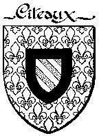
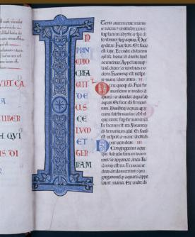
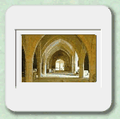
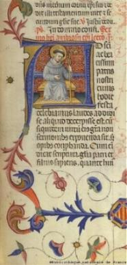

FAMILIARES, NASCIMENTO E JUVENTUDE - Nasceu em Fontaines, próximo a Dijon na França, no ano de 1090. Seu pai
chamava-se Tescelin, era um valente nobre, respeitado e admirado pelos seus
concidadãos. Sua mãe Aleth, além de possuir virtudes excepcionais, era filha
de Bernardo de Montbard e possuÃa laços familiares com os Duques de Borgonha,
que eram influentes na alta corte da França.
FAMILIARES, NASCIMENTO E JUVENTUDE - Nasceu em Fontaines, próximo a Dijon na França, no ano de 1090. Seu pai
chamava-se Tescelin, era um valente nobre, respeitado e admirado pelos seus
concidadãos. Sua mãe Aleth, além de possuir virtudes excepcionais, era filha
de Bernardo de Montbard e possuÃa laços familiares com os Duques de Borgonha,
que eram influentes na alta corte da França.
Da união nasceram sete filhos: Guido, Gerardo, Bernardo, Umbelina, André, Bartolomeu e Nivard.
Criou os filhos, incutindo no coração de cada um o amor a Deus, a simplicidade no vestuário e a não serem glutões, o que era muito comum naquela época, alimentando-se somente do necessário, sem excessos.
Deu-lhes um piedoso exemplo de caridade e respeito aos menos favorecidos, visitando os lares dos necessitados e dos doentes, provendo-os do conforto material e expressando-lhes palavras cheias de afeto, que lhes amenizavam as dores e lhes serviam de consolo.

Uma das caracterÃsticas mais conhecidas de São Bernardo, que ele herdou de sua mãe, era o zelo apaixonado pela dignidade e pureza de religião. Quando ainda criança, adoeceu e sofreu uma violenta enxaqueca. Uma mulher das imediações se propôs a curá-lo. Acercou-se da cabeceira de seu leito exibindo objetos cabalÃsticos e murmurando uma estranha oração. Ele saltou da cama e soltando gritos de horror, a expulsou imediatamente do quarto. Diz-se que em recompensa de sua fidelidade a religião, a misericórdia Divina atuou e fez com que aquela dor incômoda o abandonasse no mesmo momento.
Era desejo de Tescelin que seus filhos seguissem, como ele, a carreira militar. Contudo, Aleth achou que Bernardo era muito franzino e na verdade, queria cultivar nele o hábito de estudar, orientando-o para uma carreira intelectual.
Com a idade de 8 anos, foi matriculado na Escola em São Vorles, perto de Chatillon.
Desde o inÃcio aplicou-se aos estudos com decisão. Era sério, compenetrado e extremamente tÃmido. Mas aprendia com muita facilidade os deveres e por isso atraia a atenção de seus colegas que o admiravam.
Entre muitos amigos que conquistou em São Vorles, existia dois pelos quais nutria maior amizade: seu primo Godofredo de La Roche e Hugo, filho do Conde Macon, que posteriormente foram seus companheiros no convento.
Voltou a Fontaines em 1110, depois de permanecer
cerca de 13 anos em 
Em agosto de 1110, teve uma forte comoção, ao perder sua mãe com 40 anos de idade. Aleth morreu em consequência de uma terrÃvel infecção acompanhada de febre muito alta.
Ficou inconsolável. Só depois de algum tempo e de muitas investidas de sua irmã Umbelina, é que se descontraiu, porque amava devotadamente sua mãe e tinha nela uma eficaz conselheira.
Nos tempos que se seguiram permaneceu sem rumo certo, sem condições psicológicas de definir o seu futuro. E assim ficou sujeito à s tentações do mundo, que chegavam diabolicamente. Mas ele teve forças para resistir ao mal com bravura e sacrifÃcio.

 MOSTEIRO DE CISTER
– Por fim, resolveu seguir a carreira religiosa,
MOSTEIRO DE CISTER
– Por fim, resolveu seguir a carreira religiosa,
Mas não quis ir sozinho para o Mosteiro. Com esforço, empreendeu uma vigorosa investida a fim de cativar seus irmãos, parentes e amigos, aliciando-os para entrarem na Ordem de Cister, que foi a escolhida por ele.
Depois de algumas tentativas conseguiu convencer quatro de seus irmãos, diversos primos e muitos amigos, formando um grupo de 31 pessoas, que se reuniram em Chatillon, na propriedade de seu pai.
Ali permaneceram cerca de 6 meses, fazendo uma preparação voluntária, para uma maior conscientização do passo que iam dar, assim como sedimentar no coração, o sadio ideal do apostolado divino.

Certo dia, próximo à Páscoa do ano 1112, Estevão, o Abade de Cister foi informado da chegada ao Convento de um grupo de cavalheiros que lhe desejavam falar.
Depois das apresentações e das conversas iniciais, compreendeu que ali estava a mão de DEUS, que o ajudava a fazer crescer a Ordem Cisterciense e por isso sentiu uma imensa alegria no coração, ao receber aqueles rapazes.
Naquela época, Bernardo estava com 22 anos de idade. O que distinguia o noviço cisterciense de um profano era apenas uma capa preta com capuz, isto porque eles só recebiam o hábito religioso no dia em que faziam a profissão de fé.
Observavam a Regra como os monges, não falavam com ninguém, além do Abade e do Padre Mestre.
Dessa forma, representou para Bernardo uma enorme consolação, ver ao seu lado os 30 companheiros de noviciado na hora de prestar os "votos" de Pobreza, Castidade, Obediência, Conversão de Hábitos e Firmeza, de acordo com o cerimonial ainda hoje observado na Ordem Cisterciense, quando então, trocaram suas vestes mundanas pelo hábito religioso.
A entrada dele e de seus companheiros no Convento de Cister, atraiu a atenção do povo sobre o Mosteiro, que passou a ser considerado como uma verdadeira opção de vida, mostrando que o exemplo daqueles rapazes, estava frutificando. Isto fez com que surgisse grande quantidade de postulantes. Pessoas que desejavam ingressar na vida religiosa acorreram aos portões da Abadia, objetivando entrar no Mosteiro.